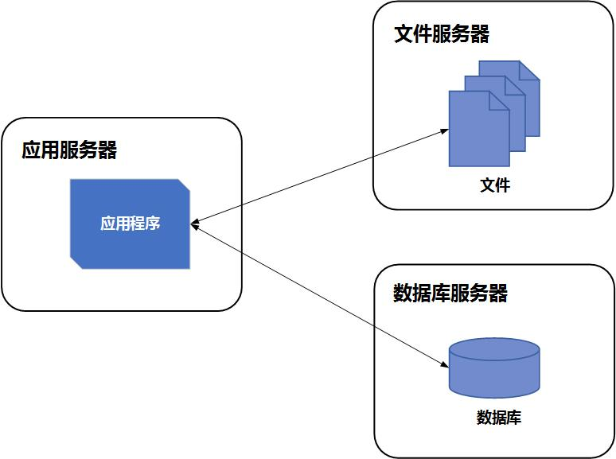
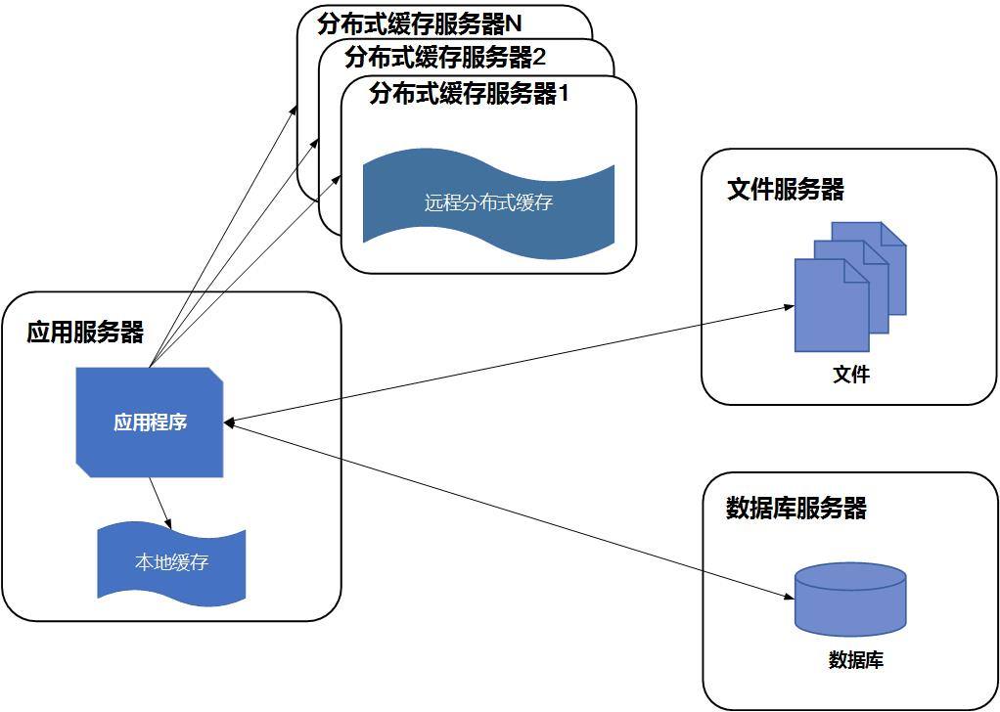
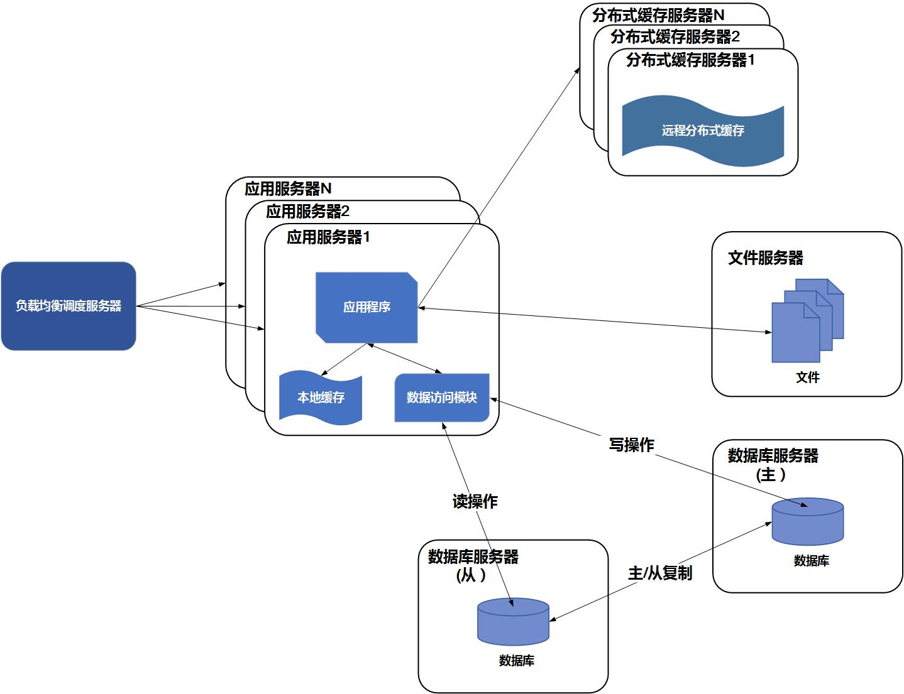
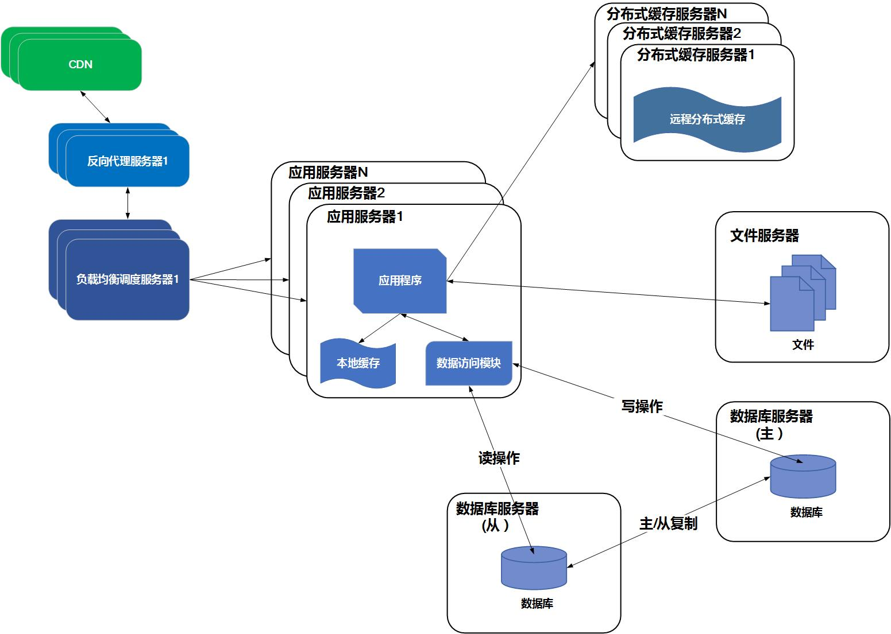
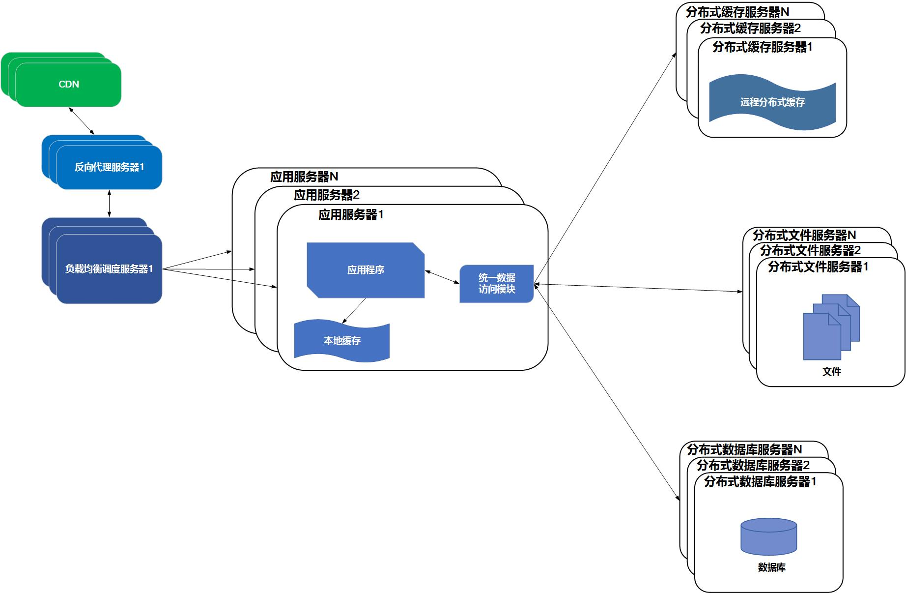
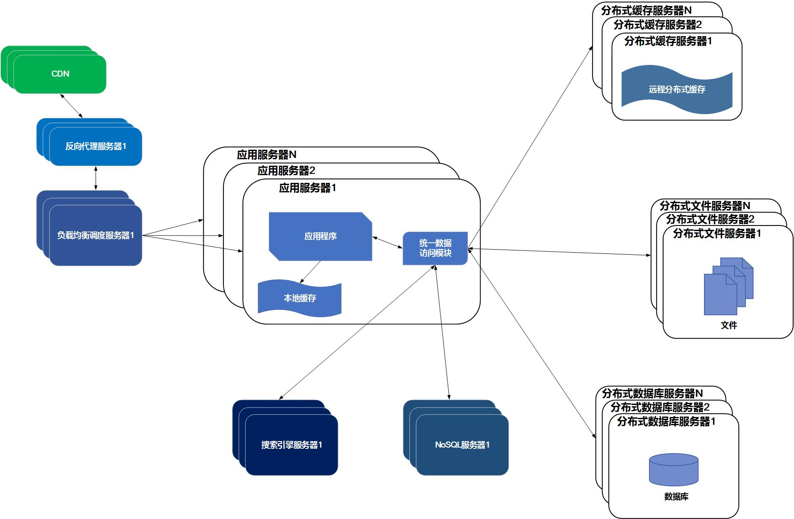
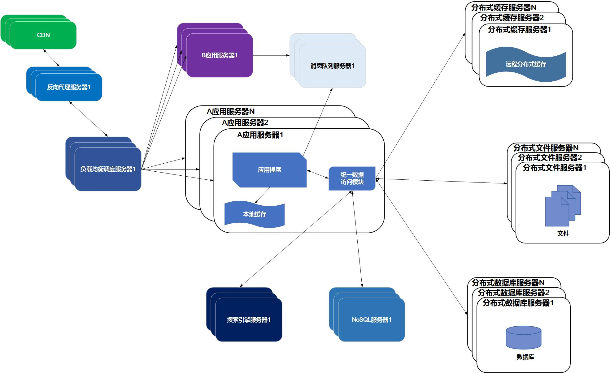
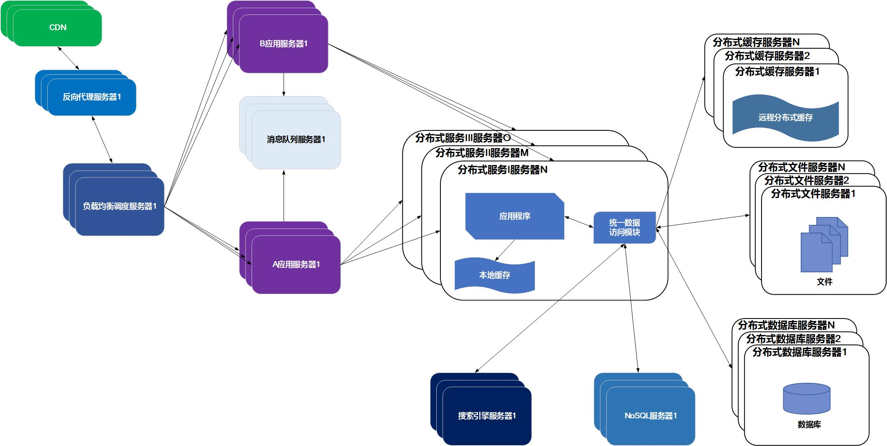

上篇文章讲了一些高并发相关的知识，相信大家对高并发有些简单的认识。说到高并发，往往离不开分布式系统。人们经常将两者拿来一起讨论，因为高并发（High Concurrency）是互联网分布式系统架构设计中必须考虑的因素之一。可以这么说，目前应用商城上很多社交应用，网络游戏的后台服务都是分布式服务。那具体什么催生出今天的分布式系统呢？文章的主要内容是讲讲大型网站的服务架构演变。
1.初始阶段的网站架构
在互联网展露出萌芽的网络时代，网站基本都是小型网站。网站的访客也不是很多，通常会将应用程序、数据库、文件等所有资源都在一台服务器上。这里为 Java Web 服务为例。网站开发者可以使用 Tomcat 等 Web 容器直接运行 JSP 程序，然后将数据存储到数据库，文件直接存放到服务器的磁盘中。就像这样子：

2.应用服务和数据服务分离
随着网站业务的发展和用户量的增加，一台服务器就无法再满足需求了。大量用户访问导致访问速度越来越慢，而逐渐增加的数据也会导致存储空间不足。这时需要将 Web 应用和数据分离，分别将存放到不同的服务器：应用服务器、文件服务器和数据库服务器。这样不仅提高了单台机器的负载能力，也提高了容灾能力。

3.使用缓存改善网站性能
随着用户再增加，网站又会一次面临挑战：数据库压力太大导致整站访问效率再此下降，用户体验受到影响。
一个网站往往 80% 的业务访问集中在 20% 的数据上。那么将这一小部分频繁读取的数据先提前缓存在内存中，而不是每次都去数据库读取。这样就可以减少数据库的访问压力，从而提高整个网站的访问速度。
缓存分为本地缓存和分布式缓存服务器，前者更快但容量有限，后者理论上容量可以无限伸缩。

4.使用集群改善并发处理能力
使用缓存后，数据访问压力得到了缓解.但是单一应用服务器能够处理的请求连接有限，在网站访问高峰期，应用服务器就成了整个网站的效率瓶颈。因此使用负载均衡处理器势在必然。通过负载均衡调度服务器，可将来自浏览器的访问请求分发到应用的集群中的任何一台服务器上。使用服务器集群也有个好处，Web 应用程序更新可以做到用户无感知。

大部分应用使用软件来实现负载均衡。常见的软件有 Nginx 等。
5.数据库读写分离
当用户达到一定规模后，数据库因为负载压力过高而成为网站的瓶颈。虽然前面使用缓存能满足查询的需求，但是大部分数据操作还是需要通过数据库来完成。而目前主流的数据库都提供主从热备功能，通过配置两台数据库主从关系，可以将一台数据库的数据更新同步到另一台服务器上。网站利用数据库这一功能实现数据库读写分离，从而改善数据库负载压力。

应用服务器在写数据的时候，访问主数据库，主数据库通过主从复制机制将数据更新同步到从数据库，这样当应用服务器读数据的时候，就可以通过从数据库获得数据。为了便于应用程序访问读写分离后的数据库，通常在应用服务器端使用专门的数据访问模块，使数据库读写分离对应用透明。
6.反向代理和CDN加速
随着网站名气越多越大，用户规模越来越大，网站业务也随着继续壮大。为了满足不同地区的用户快速访问网站的需求，需要提高网站的访问速度。主要手段有使用 CDN 和反向代理。
同时 Ajax 技术的出现，Web 应用会将数据（内容和图片）和页面框架（指 HTML 文件以及其中的标签）。页面框架内容存放到 CDN 服务器上，数据存放到数据库服务器上。当用户使用浏览器访问网站，会显示页面框架，然后页面框架发起 HTTP 请求加载数据。
而反向代理是部署在网站的中心机房，当用户请求到达中心机房后，首先访问的反向代理，如果反向代理缓存着用户请求的资源，则直接返回给用户。

因此，CDN 和反向代理的基本原理都是缓存。
7.使用分布式文件系统和分布式数据库系统
任何强大的单一服务器都满足不了大型网站持续增长的业务需求。
分布式数据库时网站数据库拆分的最后手段，只用在单表数据规模非常大的时候才使用。不到不得已时，网站更常用的数据库拆分手段是业务拆分，将不同业务的数据部署在不同的物理服务器上。

8.使用NoSQL和搜索引擎
随着网站业务越来越复杂，对数据存储和检索的需求也越来越复杂。网站需要采用一些非关系数据库技术如 NoSQL 数据库和非数据库查询技术如搜索引擎。而常见的 NoSQL 数据库有 Mongodb、HBase等。

9.业务拆分
大型网站为了应对日益复杂的业务场景，通过使用分而治之的手段将真个网站业务拆分成不同的产品线。如大型购物交易网站都会将首页、商铺、订单、买家、卖家等拆分成不同的产品线，分归不同的业务团队负责。

10.分布式服务
随着业务拆分越来越小，存储系统越来越庞大，应用系统的整体复杂度呈指数级增加，部署维护越来越困难。
既然每一个应用系统都需要执行许多相同的业务操作，比如用户管理、商品管理等，那么可以将这些共用的业务提取出来，独立部署。由这些可复用的业务连接数据库，提供共用业务服务，而应用系统只需要管理用户界面，通过分布式服务调用共用业务服务完成具体业务操作。

大型网站的架构演化到这里，基本上大多数的技术问题都可以得以解决了。
本文本分内容以及图片参考书籍《大型网站技术架构：核心原理与案例分析》作者: 李智慧。